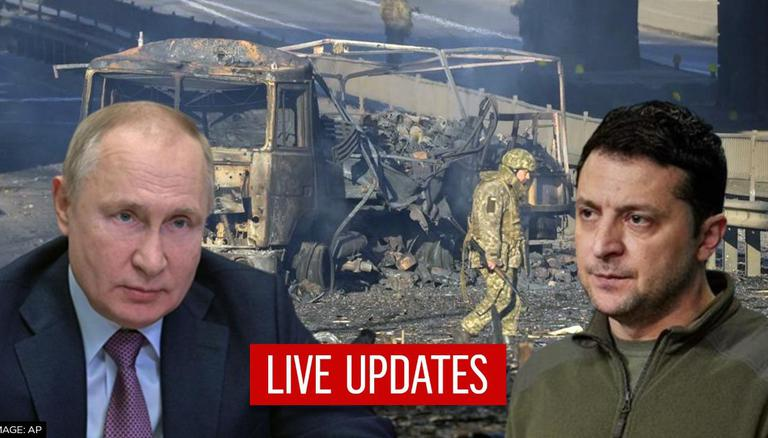

국제사법재판소(ICJ)가 다음주 우크라이나 전쟁과 관련해 청문회를 연다. 러시아가 침략의 명분으로 삼은 돈바스 지역의 집단학살 주장 등을 둘러싼 진실 공방이 벌어질 것으로 예상된다.
유엔 산하 기구인 국제사법재판소는 1일(현지시각) 성명을 내어 “7일과 8일 네덜란드 헤이그에서 ‘집단학살 범죄의 방지와 처벌에 관한 협약’(CPPCG)과 관련한 집단학살 주장(우크라이나 대 러시아)’에 대한 공청회를 연다”고 밝혔다.
7일은 우크라이나가 진술하고, 8일은 러시아가 주장할 기회를 얻는다. 이번 공청회는 우크라이나가 27일 러시아를 제소한 데 따른 것이다. 우크라이나는 소장에서 ‘도네츠크와 루간스크에서 집단학살을 막기 위해 침략했다’는 러시아의 주장이 거짓에 근거한 억지라며 러시아군의 철군을 요구했다. 그동안 블라디미르 푸틴 러시아 대통령은 아무 증거도 내놓지 않은 채 ‘우크라이나가 돈바스 지역의 도네츠크와 루간스크에서 대량학살 범죄를 저질렀다’며 ‘이를 막기 위한 러시아의 군사행동은 정당하다’고 주장해 왔다.
이에 대해 우크라이나는 “돈바스 지역에서 집단학살 행위가 없었다. 러시아는 이런 잘못된 주장에 근거해 우크라이나를 침략해 우크라이나 국민의 인권을 심각하고 광범위하게 침해하고 있다”고 반박했다. 또 협약이 집단학살을 막기 위해 한 나라가 다른 나라를 침략할 권리를 주지 않는다고 주장했다.
중견련에 따르면 센터는 러시아, 우크라이나 및 인근 국가에서 사업장을 운영하거나 해당 지역과 거래 중인 중견기업의 직·간접적 애로 해소를 지원하기 위해 개설했다. 원·부자재 및 에너지 자원 수급, 물류, 결제 등 구체적인 현안을 신속히 파악하고 산업통상자원부 등 유관 부처 및 관련 기관과 긴밀히 협력해 효과적인 대응 방안을 모색할 계획이다.

산업부가 긴급 가동한 전략물자관리원의 ‘러시아 데스크’는 물론 대한무역투자진흥공사의 ‘우크라이나 비즈니스 애로 상담 센터’, 한국무역협회의 ‘우크라이나 사태 관련 긴급 애로 접수 창구’ 등과 긴밀히 협력해 나아갈 계획이다.
중견기업의 개별 피해에 대한 신속한 맞춤 지원을 위해 중견기업·중견련·산업부 간 핫라인도 가동한다. 현지 상황 변화에 따른 필수 정보 및 지원 현황·성과를 공유하고, 지원 사안별 유관 부처 협력 속도를 높일 예정이다.
최희문 중견련 전무는 “우크라이나 전쟁은 해당 지역에 진출한 중견기업의 즉각적인 애로는 물론, 원자재 수급, 국제 에너지 가격 상승, 식량 파이프 훼손, 계약 차질 등으로 인한 산업계 전반의 장기적인 위기를 야기할 수 있다”며 “우크라이나와의 평화적 연대, 개별 기업의 애로를 해소하고, 러시아 경제 제재 강화 이후 우리 산업의 추가적인 피해를 최소화할 지속적인 교류, 협력의 공간을 열어갈 수 있도록 최선을 다해야 할 것”이라고 말했다.